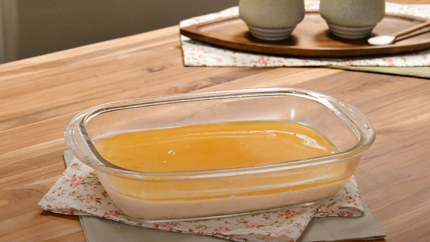

Bala baiana na travessa

Ingredientes
Recheio
- 395g de leite condensado
- 200ml de creme de leite
- 150g de coco ralado
Calda
- 2 xícaras de água
- 1 + 1/2 xícara de açúcar
- 3 colheres (sopa) de vinagre
Modo de preparo
-
Em uma panela, adicione o leite condensado, o creme de leite e o coco ralado
-
Mexa até ficar em ponto de brigadeiro.
-
Em uma travessa, adicione o brigadeiro de coco e leve para gelar por 30 minutos.
-
Em uma panela adicione a água, o açúcar e o vinagre
-
Deixe virar um caramelo claro.
-
Adicione sobre o brigadeiro, leve pra geladeira pro 1 hora e sirva